GCWeb design system
GCWeb templates and components are used for Canada.ca. In this design system, you can find components, templates and design basics that are for all Canada.ca, as well as ones specific to CRA web pages.
To learn more about how the GCWeb design system is structured and which design systems to select for your project, read the design system overview.
-
|
-
|
-
|
-
|
-
All design system elements
Includes all components, templates, and design basics.
What are GC core, CRA-specific and CRA variant elements?
GC core
Elements of the Canada.ca design system as well as other recommended Web Experience Toolkit elements for use across Government of Canada websites
CRA-specific
Design elements created and tested at the CRA and used specifically for CRA web pages
CRA-variants
A variant of GC components that add additional guidance or detail on the use of those components for CRA content
| Banner | Title | Summary | Type | Category | Tags |
|---|---|---|---|---|---|
Alerts |
Colour coded messages that provide contextual feedback on user actions or important changes to information or service availability |
Components | GC core | Colour, Attention | |
And/or design |
Use to clearly demonstrate that there are options or that there are content blocks that are complimentary/associated. |
Components | CRA-specific | Options, columns | |
Badges |
Numerical indicators that highlight the number of updates, new or unread items associated with a link |
Components | GC core | Links, Counter, Number | |
| 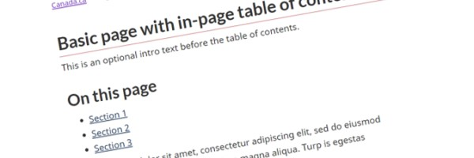 |
Basic page |
Basic layout for Canada.ca content pages that can be combined with relevant components |
Templates | GC core | |
Borders |
Add single or multiple borders to design elements, remove borders or sharpen corners that appear in design components such as a "well" |
Components | GC core | Horizontal rule, Rounded, Sharpened corners | |
| 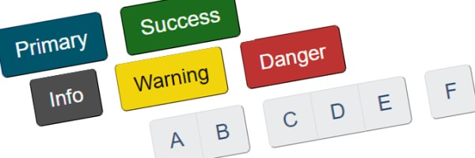 |
Buttons |
Create a call to action that entices the user to submit content from a form, or to take users to a webpage that provides additional information |
Components | GC core | Colour, Links |
Calendar |
Interface for navigating a chronological list of events |
Components | GC core | Tables, Dates | |
Campaign pages |
Time-limited, promotional pages designed to communicate, educate, influence, market, raise awareness and call to action |
Templates | GC core | Promotion, marketing | |
Carousel |
Tab or cycle through content in a slide show format |
Components | GC core | Tabs, Invisible, Slideshow, Show, Images, Slider, Details, Summary, Expand, Gallery | |
Charts and graphs |
Visualization techniques for communicating data or statistics |
Components | GC core | Graphics, Pie, Bar, Values | |
Code |
Emulate source code and display in monospace font |
Components | GC core | Coding, Prettify | |
Colour |
Mandatory colours for canada.ca web content |
Basics | GC core | ||
Contact us |
Provide access to multiple contact options and present them consistently in a variety of contexts |
Components | CRA-specific | interactive questions, my account, my business acount, online, phone, tty, call, telephone numbers, hours | |
| 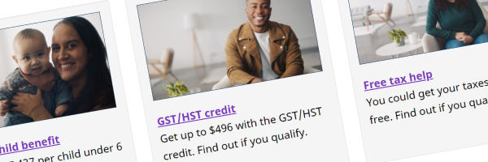 |
Context-specific features |
In-page components used to promote government activities, initiatives, programs and services |
Components | GC core | Promotion, marketing, campaign |
Country identifier |
Loads or replaces an element's content based upon the user's country |
Components | GC core | Location | |
Data Ajax |
Allows parts of one webpage to load or update within a second webpage (repurpose content) |
Components | GC core | insert, content, call, loader, wrapper | |
| 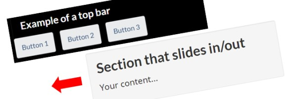 |
Data inview |
Displays an overlay when a section moves out of the viewport |
Components | GC core | Overlay, Visible, Invisible, Show, Hidden, Close, Exit, Bar, Navigation |
Data picture |
Allow a web page to specify different image sources to display based on media queries |
Components | GC core | Images, Resolutions | |
Dismissable content |
Allow the user to dismiss non-primary content that they only need to see once |
Components | GC core | Dismiss, hide, secondary content | |
Doormats |
For presenting sets of links and descriptions displayed in concise blocks |
Components | CRA variant | Services and information, topics, links | |
| 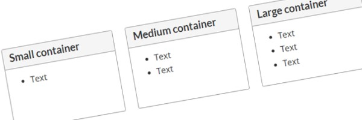 |
Equal height (Equalize) |
Equalize the height of elements on the same baseline |
Components | GC core | Panels, Wells, Borders |
Expand/hide |
Accordion style that allows the user to show or hide secondary content upon request |
Components | GC core | Accordion, collapse, hidden, options | |
Footnotes |
Create a note a reference, citation, or comment that displays at the bottom of the page |
Components | GC core | References, Links, Cites | |
| 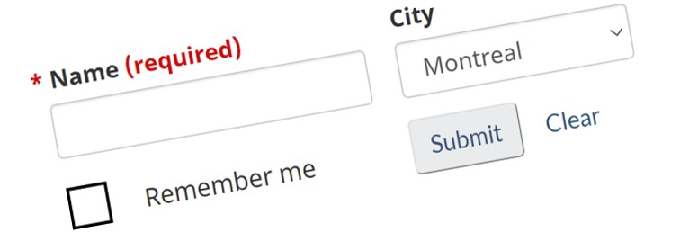 |
Forms and form elements |
Build a form to collect and transmit information from users in a pre-defined format |
Components | GC core | feedback, validation checkboxes, radio buttons, labels, input, selects, textarea, file, date picker, submit, clear, auto-complete |
| 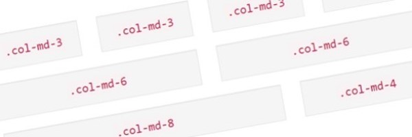 |
Grids |
Create page layouts using a series of rows and columns that house content |
Components | GC core | Responsive, Viewports, Devices, Resolution |
Headings and titles |
Create titles for content that are large, bold, hierachical and concise |
Components | CRA variant | Size, Text, Titles | |
Icons |
Use one of the two icon sets, Glyphicons or Font Awesome for decorative purposes |
Components | GC core | Colour, Images, Fonts | |
Images |
Visual content that complements or enhances text, including photographs, graphics, drawings, or diagrams |
Components | GC core | Thumbnais, Responsive, Photos, Visual, Decorative | |
| 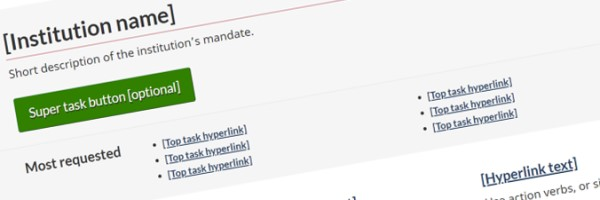 |
Institutional profile page |
Mandatory landing page for Government of Canada institutions and organizations |
Templates | GC core | |
Interactive questions (field flow) |
Present people with a sequence of simple questions that leads to the specific answer they need to continue with or complete their task |
Components | GC core | decision tree | |
Invisible and visible content |
Used to show or hide content, including styles specific to assistive technology (aid screen-reader users), responsive design, general usage and print |
Components | GC core | Printing, Hidden, Devices, Viewports, Resolution | |
Keyboard keys |
Mimic the keys of a computer keyboard |
Components | GC core | ||
Labels |
Call attention to a section of content by adding short, text-based bits of supporting information |
Components | GC core | Colour, Attention | |
| 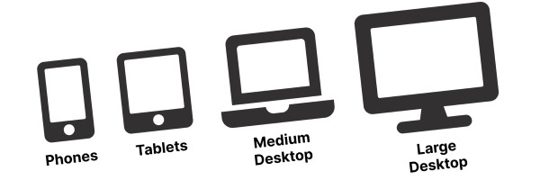 |
Layout |
Layout for canada.ca web pages, including header, footer, widths and breakpoints |
Basics | GC core | |
Links |
Coding a word, phrase, or image to allow the user to navigate, query or interact with the content |
Components | CRA variant | Hyperlinks | |
Lists |
Bulleted lists, numbered lists, description lists, as well as enhancements like interactive checklists, filtered lists and more |
Components | CRA variant | interactive, ordered, unordered, bullets, filters, columns | |
Margin proximity |
Increase or descrease the white space between elements to suggest whether items are related or unrelated |
Components | GC core | Spacing, Margins, Left, Right, Top, Bottom | |
| 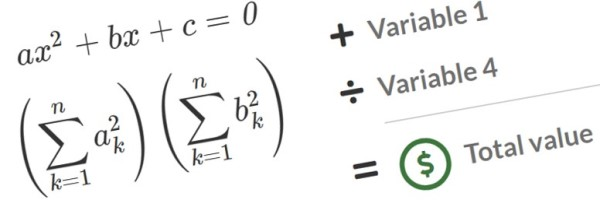 |
Math calculations and equations |
Display mathematical formulas within a page |
Components | GC core | Variables, Calculations |
Opacity |
Apply a transparency to a foreground item so the background becomes visible |
Basics | GC core | invisible | |
Page feedback tool |
Allows users to provide feedback or report any problems they experience with a specific web page or the web site in general |
Components | GC core | Errors, validation, issues, comments, mistakes | |
Pagination |
For long documents broken up over several pages, allows user to navigate between pages using either the "Next", "Previous", or (if present) the numeric pagination hyperlinks |
Components | GC core | Buttons, Links, Navigation | |
Panels |
Create a visual grouping of content using different colour themed options, as well as distinct header and footer |
Components | GC core | Boxes, Menu, Navigation, Layout | |
Popups |
Display images and other content in a dialog box, either individually or as part of a gallery |
Components | GC core | lightbox, overlay, modal, gallery | |
Quotations |
Cite a group of words by someone other than the original author or speaker |
Components | GC core | blockquote | |
Session timeout |
Warn users when their session is about to expire |
Components | GC core | exit, redirect, time out | |
Subway pattern |
Use to break up long and complex content related to a single task by breaking it into sub-tasks |
Templates | CRA-variant | ||
Tabbed interface |
Separate related content into different panes that are viewable one at a time when the respective tab is clicked |
Components | GC core | expand, hide, tabs, invisible | |
Table of contents |
Provide an outline for the content of a page that has multiple subsections |
Components | CRA-specific | On this page | |
Tables |
Organize data into rows and columns in order to create data cells |
Components | GC core | Tabular, Zebra striping, Hover, Responsive, Colour, Table validator | |
Text editing effects |
Use of effects like marked text, deleted text and strikethrough text |
Basics | GC core | Edits, Versions, Documents | |
Text formatting |
Text emphasis, sizing, colours, alignment, wrapping and truncating |
Basics | GC core | bold, italics, underline, align, left, right, center, wrap, truncate | |
Toggle |
Allow an element to be toggled between on and off states |
Components | GC core | expand, hide, collapse, accordion, exhide | |
| 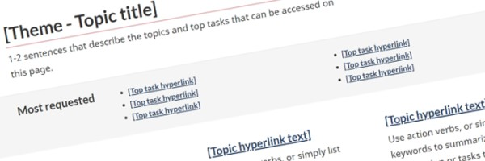 |
Topic page |
Provides navigation to topics and destination pages that support task completion |
Templates | GC core | |
Typography |
Fonts for headings and body text, line lengths and link appearance |
Basics | GC core | ||
Variables |
Use when there is reference to a variable like "x", "n" or "y" within a sentence (a non-mathematical phrase) |
Components | GC core | Calculations | |
Video and audio |
Add video clips and audio recordings to complement or enhance text |
Components | GC core | Multimedia player, transcripts, closed captions, licensing | |
Wells |
Spotlight content by placing it in a light grey box |
Components | GC core | Layout, Boxes |


- Date modified: